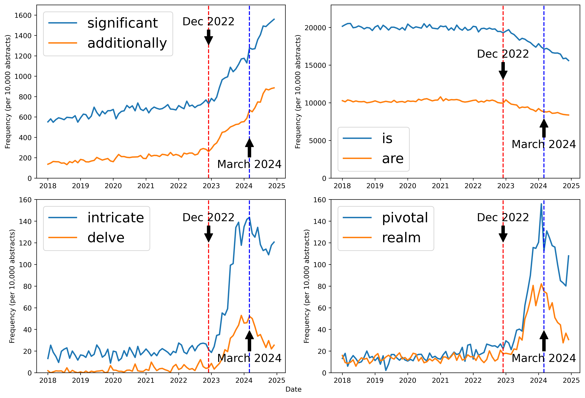

<meta name="viewport" content="width=device-width, initial-scale=1">
<title>Are there words LLMs won’t say?</title>
<meta name="description" content="A visual explanation of temperature, top-k, top-p, min-p, and Word Context Survival in LLM sampling.">
<link rel="alternate" type="application/rss+xml" title="Samer's blog RSS feed" href="https://hax2.github.io/blog/feed.xml">
<link rel="preconnect" href="https://fonts.googleapis.com">
<link rel="preconnect" href="https://fonts.gstatic.com" crossorigin>
<link rel="stylesheet" href="https://fonts.googleapis.com/css2?family=Inter:wght@300;400;500;600;700;800&display=swap">

<style>
  html {
    background: #f7f6f2;
  }

  body {
    margin: 0;
    min-height: 100vh;
    background:
      linear-gradient(180deg, rgba(40, 95, 130, 0.08), rgba(40, 95, 130, 0) 14rem),
      #f7f6f2;
    font-family: 'Inter', system-ui, -apple-system, BlinkMacSystemFont, "Segoe UI", Roboto, Helvetica, Arial, sans-serif;
  }

  .wcs-post {
    --wcs-page-bg: transparent;
    --wcs-surface: #ffffff;
    --wcs-soft-surface: #f6f3ee;
    --wcs-text: #1f2328;
    --wcs-muted: #666b73;
    --wcs-border: #ded8cf;
    --wcs-rule: #ebe5dc;
    --wcs-accent: #285f82;
    --wcs-kept-bg: #eef7f3;
    --wcs-kept-border: #96b9aa;
    --wcs-kept-fill: #4b8a72;
    --wcs-kept-text: #234f42;
    --wcs-cut-bg: #f8efec;
    --wcs-cut-border: #d5aaa0;
    --wcs-cut-fill: #d8b0a7;
    --wcs-cut-text: #733b32;
    --wcs-threshold: #ad7425;
    box-sizing: border-box;
    width: min(100%, 840px);
    margin: 0 auto;
    padding: 3rem 1.35rem 4.5rem;
    background: var(--wcs-page-bg);
    font-size: 1.2rem;
    line-height: 1.75;
    color: var(--wcs-text);
    text-rendering: optimizeLegibility;
  }

  .wcs-post *,
  .wcs-post *::before,
  .wcs-post *::after {
    box-sizing: inherit;
  }

  .wcs-post a {
    color: var(--wcs-accent);
    text-decoration-color: rgba(40, 95, 130, 0.35);
    text-underline-offset: 0.15em;
  }

  .wcs-post a:hover {
    text-decoration-color: currentColor;
  }

  .wcs-post h1 {
    max-width: 24ch;
    font-size: clamp(2rem, 5.5vw, 3rem);
    line-height: 1.12;
    letter-spacing: -0.02em;
    margin: 0 0 1.75rem;
    color: #121417;
    font-weight: 800;
  }

  .wcs-post h2 {
    font-size: clamp(1.4rem, 2.5vw, 1.75rem);
    line-height: 1.25;
    letter-spacing: -0.015em;
    margin: 3rem 0 0.9rem;
    color: #16191d;
    font-weight: 700;
  }

  .wcs-post h3 {
    font-size: 1.2rem;
    line-height: 1.3;
    letter-spacing: -0.01em;
    margin: 0 0 0.35rem;
    color: #181b20;
    font-weight: 600;
  }

  .wcs-post p {
    margin: 1.12rem 0;
  }

  .wcs-post ul {
    margin: 1.15rem 0 1.25rem;
    padding-left: 1.35rem;
  }

  .wcs-post li {
    margin: 0.55rem 0;
    padding-left: 0.15rem;
  }

  .wcs-post em {
    font-style: italic;
  }

  .wcs-post pre {
    background: var(--wcs-soft-surface);
    border: 1px solid var(--wcs-border);
    border-radius: 8px;
    padding: 0.85rem 1rem;
    overflow-x: auto;
  }

  .wcs-post code {
    font-family: ui-monospace, SFMono-Regular, Menlo, Monaco, Consolas, monospace;
  }

  .wcs-figure {
    margin: 1.7rem 0 2rem;
  }

  .wcs-figure img {
    display: block;
    width: 100%;
    height: auto;
    border: 1px solid var(--wcs-border);
    border-radius: 8px;
    background: var(--wcs-surface);
  }

  .wcs-figure figcaption {
    margin-top: 0.55rem;
    color: var(--wcs-muted);
    font-size: 0.88rem;
    line-height: 1.45;
  }

  .wcs-equation {
    display: flex;
    justify-content: center;
    align-items: center;
    gap: 0.45rem;
    margin: 1.25rem 0;
    padding: 1.05rem;
    background: var(--wcs-surface);
    border: 1px solid var(--wcs-border);
    border-radius: 8px;
    color: #15181c;
    font-family: Georgia, "Times New Roman", serif;
    font-size: 1.2rem;
    line-height: 1.25;
    overflow-x: auto;
  }

  .wcs-frac {
    display: inline-grid;
    grid-template-rows: auto auto;
    align-items: center;
    min-width: max-content;
    text-align: center;
    vertical-align: middle;
  }

  .wcs-frac-num {
    border-bottom: 1.5px solid currentColor;
    padding: 0 0.45rem 0.18rem;
  }

  .wcs-frac-den {
    padding: 0.18rem 0.45rem 0;
  }

  .wcs-sigma {
    font-size: 1.45rem;
    vertical-align: -0.08em;
  }

  .wcs-brace {
    font-size: 1.35rem;
  }

  .wcs-widget {
    margin: 1.8rem 0 2.2rem;
    padding: 1.2rem;
    border: 1px solid var(--wcs-border);
    border-radius: 10px;
    background: var(--wcs-surface);
    box-shadow: 0 1px 0 rgba(31, 35, 40, 0.04);
  }

  .wcs-widget p {
    margin: 0.35rem 0 1rem;
    color: var(--wcs-muted);
    font-size: 0.95rem;
    line-height: 1.55;
  }

  .wcs-controls {
    display: grid;
    gap: 0.75rem;
    margin: 1rem 0;
  }

  .wcs-control {
    display: grid;
    gap: 0.25rem;
  }

  .wcs-control label {
    font-size: 0.94rem;
    font-weight: 700;
    color: #2c3137;
  }

  .wcs-control input[type="range"],
  .wcs-control select {
    width: 100%;
    accent-color: var(--wcs-accent);
  }

  .wcs-control input[type="range"] {
    min-height: 2rem;
  }

  .wcs-math {
    background: var(--wcs-soft-surface);
    border: 1px solid var(--wcs-border);
    border-radius: 8px;
    padding: 0.9rem 1rem;
    font-family: Georgia, "Times New Roman", serif;
    font-size: 1rem;
    margin: 1rem 0;
  }

  .wcs-live-equations {
    display: grid;
    gap: 0.55rem;
  }

  .wcs-live-equation {
    display: flex;
    align-items: center;
    gap: 0.5rem;
    flex-wrap: wrap;
  }

  .wcs-live-label {
    min-width: 8.5rem;
    color: var(--wcs-muted);
    font-size: 0.86rem;
    font-weight: 700;
    text-transform: uppercase;
    letter-spacing: 0.02em;
  }

  .wcs-live-value,
  .wcs-live-values {
    color: #15181c;
  }

  .wcs-live-values {
    display: flex;
    gap: 0.65rem;
    flex-wrap: wrap;
  }

  .wcs-token-row {
    display: grid;
    grid-template-columns: 120px 1fr 80px;
    gap: 0.65rem;
    align-items: center;
    margin: 0.55rem 0;
    font-size: 0.94rem;
  }

  .wcs-token-name {
    font-family: ui-monospace, SFMono-Regular, Menlo, Monaco, Consolas, monospace;
  }

  .wcs-topp-row {
    grid-template-columns: 150px 1fr 155px;
  }

  .wcs-topp-row .wcs-token-name,
  .wcs-topp-meta {
    white-space: nowrap;
  }

  .wcs-bar-shell {
    height: 18px;
    border-radius: 999px;
    background: #ece7df;
    overflow: hidden;
  }

  .wcs-bar {
    height: 100%;
    width: 0%;
    border-radius: 999px;
    background: var(--wcs-kept-fill);
  }

  .wcs-note {
    border-left: 4px solid var(--wcs-accent);
    background: #f2f5f6;
    padding: 0.75rem 1rem;
    margin: 1rem 0;
    color: #2f3940;
    font-size: 0.94rem;
  }

  .wcs-rank-strip {
    display: grid;
    grid-template-columns: repeat(5, 1fr);
    gap: 0.45rem;
    margin-top: 1rem;
  }

  .wcs-rank-card {
    border: 1px solid var(--wcs-kept-border);
    border-radius: 12px;
    padding: 0.55rem;
    background: var(--wcs-kept-bg);
    min-height: 76px;
  }

  .wcs-rank-card.cut {
    background: var(--wcs-cut-bg);
    border-color: var(--wcs-cut-border);
    color: var(--wcs-cut-text);
    text-decoration: line-through;
  }

  .wcs-rank-number {
    display: inline-block;
    font-size: 0.78rem;
    border: 1px solid var(--wcs-border);
    border-radius: 999px;
    padding: 0.05rem 0.4rem;
    margin-bottom: 0.3rem;
  }

  .wcs-rank-token {
    display: block;
    font-family: ui-monospace, SFMono-Regular, Menlo, Monaco, Consolas, monospace;
    font-size: 0.9rem;
  }

  .wcs-rank-prob {
    display: block;
    color: var(--wcs-muted);
    font-size: 0.82rem;
    margin-top: 0.15rem;
  }

  .wcs-cumulative-wrap {
    position: relative;
    height: 48px;
    border: 1px solid var(--wcs-border);
    border-radius: 10px;
    overflow: hidden;
    background: #ece7df;
    margin: 1rem 0 0.6rem;
  }

  .wcs-cumulative-bar {
    display: flex;
    height: 100%;
    width: 100%;
  }

  .wcs-cumulative-segment {
    height: 100%;
    display: flex;
    align-items: center;
    justify-content: center;
    border-right: 1px solid rgba(255, 255, 255, 0.75);
    font-size: 0.78rem;
    overflow: hidden;
    white-space: nowrap;
    background: var(--wcs-kept-fill);
    color: white;
  }

  .wcs-cumulative-label {
    overflow: hidden;
    padding: 0 0.25rem;
    text-overflow: ellipsis;
  }

  .wcs-cumulative-segment.cut {
    background: var(--wcs-cut-fill);
    color: var(--wcs-cut-text);
  }

  .wcs-cumulative-segment.cut .wcs-cumulative-label {
    display: none;
  }

  .wcs-threshold-line {
    position: absolute;
    top: 0;
    bottom: 0;
    width: 3px;
    background: var(--wcs-threshold);
  }

  .wcs-threshold-label {
    position: absolute;
    top: 3px;
    transform: translateX(6px);
    font-size: 0.78rem;
    font-weight: 700;
    color: #7a4a11;
    background: rgba(255, 255, 255, 0.9);
    padding: 0.05rem 0.25rem;
    border-radius: 6px;
  }

  .wcs-threshold-label.align-left {
    transform: translateX(calc(-100% - 6px));
  }

  .wcs-minp-row {
    display: grid;
    grid-template-columns: 115px 1fr 70px 70px;
    gap: 0.55rem;
    align-items: center;
    margin: 0.55rem 0;
    font-size: 0.92rem;
  }

  .wcs-minp-bar-area {
    position: relative;
    height: 18px;
    background: #ece7df;
    border-radius: 999px;
  }

  .wcs-minp-cutoff {
    position: absolute;
    top: -5px;
    bottom: -5px;
    width: 3px;
    background: var(--wcs-threshold);
  }

  .wcs-minp-bar {
    height: 100%;
    background: var(--wcs-kept-fill);
    border-radius: 999px;
  }

  .wcs-minp-row.cut {
    color: var(--wcs-cut-text);
    text-decoration: line-through;
  }

  .wcs-minp-row.cut .wcs-minp-bar {
    background: var(--wcs-cut-fill);
  }

  .wcs-token-row.cut {
    color: var(--wcs-cut-text);
    text-decoration: line-through;
  }

  .wcs-token-row.cut .wcs-bar {
    background: var(--wcs-cut-fill);
  }

  .wcs-table {
    width: 100%;
    border-collapse: collapse;
    font-size: 0.9rem;
    margin-top: 1rem;
  }

  .wcs-table th,
  .wcs-table td {
    border-bottom: 1px solid var(--wcs-border);
    padding: 0.5rem;
    text-align: left;
    vertical-align: top;
  }

  .wcs-table th {
    background: var(--wcs-soft-surface);
  }

  .wcs-pill {
    display: inline-block;
    border: 1px solid var(--wcs-kept-border);
    border-radius: 999px;
    padding: 0.08rem 0.45rem;
    font-size: 0.78rem;
    white-space: nowrap;
    background: var(--wcs-kept-bg);
    color: var(--wcs-kept-text);
  }

  .wcs-pill.cut {
    border-color: var(--wcs-cut-border);
    background: var(--wcs-cut-bg);
    color: var(--wcs-cut-text);
  }

  .wcs-sources {
    font-size: 0.9rem;
    color: var(--wcs-muted);
    margin-top: 2.5rem;
    border-top: 1px solid var(--wcs-border);
    padding-top: 1rem;
  }

  .wcs-sources a {
    color: inherit;
  }

  .wcs-subscribe {
    margin-top: 2.75rem;
    padding-top: 1.2rem;
    border-top: 1px solid var(--wcs-border);
  }

  .wcs-subscribe h2 {
    margin-top: 0;
  }

  .wcs-subscribe p {
    max-width: 34rem;
    color: var(--wcs-muted);
    font-size: 0.98rem;
    line-height: 1.55;
  }

  .wcs-subscribe-actions {
    display: flex;
    flex-wrap: wrap;
    gap: 0.65rem;
    margin-top: 1rem;
  }

  .wcs-mailoctopus-form {
    max-width: 34rem;
    margin-top: 1rem;
  }

  .wcs-mailoctopus-form:empty {
    min-height: 3.2rem;
  }

  .wcs-subscribe-button {
    display: inline-flex;
    align-items: center;
    justify-content: center;
    min-height: 2.55rem;
    border: 1px solid var(--wcs-border);
    border-radius: 8px;
    padding: 0.55rem 0.8rem;
    background: var(--wcs-surface);
    color: var(--wcs-text);
    font-size: 0.95rem;
    font-weight: 700;
    line-height: 1.2;
    text-decoration: none;
  }

  .wcs-subscribe-button.primary {
    border-color: var(--wcs-accent);
    background: var(--wcs-accent);
    color: #ffffff;
  }

  @media (max-width: 650px) {
    .wcs-post {
      padding: 1.35rem 1.08rem 3.25rem;
      font-size: 1.125rem;
      line-height: 1.7;
    }

    .wcs-post h1 {
      max-width: 100%;
      margin-bottom: 1.25rem;
      font-size: clamp(1.8rem, 8vw, 2.4rem);
      line-height: 1.15;
    }

    .wcs-post h2 {
      margin-top: 2.65rem;
      margin-bottom: 0.7rem;
      font-size: clamp(1.3rem, 6vw, 1.5rem);
      line-height: 1.25;
    }

    .wcs-post h3 {
      font-size: 1.1rem;
      line-height: 1.3;
    }

    .wcs-post p {
      margin: 1.18rem 0;
    }

    .wcs-post ul {
      padding-left: 1.15rem;
    }

    .wcs-post pre {
      margin-inline: -0.15rem;
      padding: 0.9rem;
    }

    .wcs-widget {
      margin: 1.55rem -0.25rem 2rem;
      padding: 1rem;
      border-radius: 9px;
    }

    .wcs-widget p {
      font-size: 0.98rem;
      line-height: 1.5;
    }

    .wcs-control {
      gap: 0.35rem;
    }

    .wcs-control label {
      font-size: 0.98rem;
    }

    .wcs-note {
      padding: 0.7rem 0.85rem;
      font-size: 0.88rem;
      line-height: 1.42;
    }

    .wcs-subscribe {
      margin-top: 2.35rem;
    }

    .wcs-subscribe-actions {
      display: grid;
      grid-template-columns: 1fr;
    }

    .wcs-mailoctopus-form {
      max-width: none;
    }

    #wcs-softmax-widget {
      display: grid;
      gap: 0.7rem;
    }

    #wcs-softmax-widget h3,
    #wcs-softmax-widget p {
      margin-bottom: 0;
    }

    #wcs-softmax-widget .wcs-controls {
      margin: 0.15rem 0 0.25rem;
    }

    #wcs-softmax-widget .wcs-token-row {
      margin: 0;
    }

    #wcs-softmax-widget .wcs-math {
      order: 5;
      margin: 0.2rem 0 0;
      padding: 0.65rem;
      font-size: 0.82rem;
    }

    #wcs-softmax-widget .wcs-live-equations {
      grid-template-columns: repeat(3, minmax(0, 1fr));
      gap: 0.45rem;
    }

    #wcs-softmax-widget .wcs-live-equation {
      display: grid;
      align-content: start;
      gap: 0.25rem;
      min-height: 5.35rem;
      padding: 0.55rem 0.45rem;
      border: 1px solid var(--wcs-border);
      border-radius: 7px;
      background: rgba(255, 255, 255, 0.62);
    }

    .wcs-equation {
      justify-content: flex-start;
      margin-inline: -0.15rem;
      padding: 0.85rem;
      font-size: 1.08rem;
    }

    .wcs-live-label {
      min-width: 100%;
    }

    #wcs-softmax-widget .wcs-live-label {
      min-width: 0;
      font-size: 0.66rem;
      line-height: 1.1;
    }

    #wcs-softmax-widget .wcs-live-value,
    #wcs-softmax-widget .wcs-live-values {
      display: grid;
      gap: 0.15rem;
      font-size: 0.78rem;
      line-height: 1.15;
    }

    .wcs-figure {
      margin: 1.45rem -0.45rem 1.9rem;
    }

    .wcs-figure img {
      border-radius: 9px;
    }

    .wcs-figure figcaption {
      padding-inline: 0.45rem;
      font-size: 0.92rem;
    }

    .wcs-pipeline-figure {
      display: none;
    }

    .wcs-rank-strip {
      grid-template-columns: repeat(2, 1fr);
      gap: 0.5rem;
    }

    .wcs-rank-card {
      min-height: 58px;
      padding: 0.45rem 0.5rem;
      border-radius: 9px;
    }

    .wcs-rank-card:nth-child(n+7) {
      display: none;
    }

    .wcs-rank-number {
      margin-bottom: 0.18rem;
      font-size: 0.68rem;
    }

    .wcs-rank-token {
      font-size: 0.88rem;
    }

    .wcs-rank-prob {
      font-size: 0.76rem;
    }

    .wcs-token-row {
      grid-template-columns: minmax(0, 1fr) auto;
      gap: 0.28rem 0.75rem;
      align-items: end;
      font-size: 0.98rem;
    }

    .wcs-token-row .wcs-bar-shell {
      grid-column: 1 / -1;
      grid-row: 2;
    }

    .wcs-minp-row {
      grid-template-columns: minmax(0, 1fr) auto auto;
      gap: 0.28rem 0.6rem;
      align-items: end;
      font-size: 0.98rem;
    }

    .wcs-minp-row .wcs-minp-bar-area {
      grid-column: 1 / -1;
      grid-row: 2;
    }

    .wcs-topp-row .wcs-token-name,
    .wcs-topp-meta {
      white-space: normal;
    }

    .wcs-cumulative-wrap {
      height: 54px;
      margin: 0.85rem 0 0.7rem;
      overflow: hidden;
      background: #ece7df;
      border: 1px solid var(--wcs-border);
      border-radius: 9px;
    }

    .wcs-cumulative-bar {
      display: flex;
      height: 100%;
      width: 100%;
    }

    .wcs-cumulative-segment {
      min-width: 0;
      height: 100%;
      justify-content: center;
      border: 0;
      border-right: 1px solid rgba(255, 255, 255, 0.75);
      border-radius: 0;
      padding: 0;
      font-size: 0.7rem;
      font-weight: 700;
    }

    .wcs-cumulative-segment.cut .wcs-cumulative-label {
      display: none;
    }

    .wcs-cumulative-label {
      padding: 0 0.18rem;
    }

    .wcs-threshold-line {
      display: block;
    }

    .wcs-threshold-label {
      position: absolute;
      display: block;
      top: 4px;
      margin-bottom: 0;
      font-size: 0.72rem;
    }

    #wcs-minp-list .wcs-minp-row:nth-child(n+9) {
      display: none;
    }

    .wcs-table {
      font-size: 0.8rem;
    }
  }

  @media (max-width: 430px) {
    .wcs-post {
      padding-inline: 1rem;
    }

    #wcs-softmax-widget .wcs-live-equation {
      min-height: 0;
    }
  }

  @media (max-width: 340px) {
    #wcs-softmax-widget .wcs-live-equations {
      grid-template-columns: 1fr;
    }

    .wcs-rank-strip {
      grid-template-columns: 1fr;
    }
  }

  /* Smooth transitions for interactive elements */
  .wcs-bar,
  .wcs-minp-bar,
  .wcs-cumulative-segment {
    transition: width 0.3s ease, background-color 0.3s ease;
  }
  
  /* Walkthrough button style */
  .wcs-play-button {
    display: inline-flex;
    align-items: center;
    justify-content: center;
    gap: 0.4rem;
    padding: 0.45rem 0.9rem;
    font-size: 0.88rem;
    font-weight: 600;
    color: var(--wcs-accent);
    background: #ffffff;
    border: 1px solid var(--wcs-accent);
    border-radius: 6px;
    cursor: pointer;
    transition: all 0.2s ease;
    margin-top: 0.5rem;
    width: max-content;
  }
  .wcs-play-button:hover {
    background: rgba(40, 95, 130, 0.08);
  }
  .wcs-play-button.playing {
    color: #c97e18;
    border-color: #c97e18;
    background: rgba(201, 126, 24, 0.05);
  }

  /* Keyframes for neutral temperature pulse */
  @keyframes wcsPulse {
    0% { transform: scale(1); }
    50% { transform: scale(1.15); color: var(--wcs-accent); }
    100% { transform: scale(1); }
  }
  .wcs-pulse {
    display: inline-block;
    animation: wcsPulse 0.4s ease-out;
  }

  /* HTML/CSS Pipeline Diagram */
  .wcs-pipeline-container {
    margin: 2rem 0;
    padding: 1.5rem;
    background: var(--wcs-soft-surface);
    border: 1px solid var(--wcs-border);
    border-radius: 12px;
  }
  .wcs-pipeline-container h3 {
    margin-top: 0;
    margin-bottom: 1.2rem;
    text-align: center;
    font-size: 1.25rem;
    font-weight: 700;
  }
  .wcs-pipeline-steps {
    display: flex;
    align-items: stretch;
    gap: 0.5rem;
  }
  .wcs-pipeline-step {
    flex: 1;
    background: var(--wcs-surface);
    border: 1px solid var(--wcs-border);
    border-radius: 8px;
    padding: 1rem;
    text-align: center;
    cursor: pointer;
    transition: all 0.2s ease;
    box-shadow: 0 1px 3px rgba(0,0,0,0.04);
  }
  .wcs-pipeline-step:hover {
    transform: translateY(-3px);
    border-color: var(--wcs-accent);
    box-shadow: 0 4px 12px rgba(40, 95, 130, 0.12);
  }
  .wcs-step-num {
    display: inline-flex;
    align-items: center;
    justify-content: center;
    width: 26px;
    height: 26px;
    border-radius: 50%;
    background: var(--wcs-accent);
    color: #ffffff;
    font-weight: 700;
    font-size: 0.85rem;
    margin-bottom: 0.5rem;
  }
  .wcs-pipeline-step h4 {
    margin: 0 0 0.35rem;
    font-size: 0.95rem;
    font-weight: 700;
    color: #1a1d20;
  }
  .wcs-pipeline-step p {
    margin: 0;
    font-size: 0.82rem;
    line-height: 1.4;
    color: var(--wcs-muted);
  }
  .wcs-pipeline-arrow {
    display: flex;
    align-items: center;
    justify-content: center;
    font-size: 1.4rem;
    color: var(--wcs-border);
    font-weight: bold;
    user-select: none;
  }

  /* Scoreboard Styles */
  .wcs-dot-grid {
    display: grid;
    grid-template-columns: repeat(10, 1fr);
    gap: 0.4rem;
    max-width: 320px;
    margin: 1.2rem auto;
  }
  .wcs-dot {
    aspect-ratio: 1;
    border-radius: 50%;
    background: var(--wcs-cut-fill);
    border: 1px solid var(--wcs-cut-border);
    transition: all 0.3s ease;
    cursor: help;
    position: relative;
  }
  .wcs-dot.survived {
    background: var(--wcs-kept-fill);
    border-color: var(--wcs-kept-border);
  }

  /* Temperature Snapshot Styles */
  .wcs-temp-snapshot {
    margin: 2rem 0;
    padding: 1.2rem;
    border: 1px solid var(--wcs-border);
    border-radius: 10px;
    background: var(--wcs-surface);
    box-shadow: 0 1px 0 rgba(31, 35, 40, 0.04);
  }
  .wcs-temp-snapshot h3 {
    margin-top: 0;
    font-size: 1.15rem;
    font-weight: 700;
  }
  .wcs-temp-snapshot p {
    margin: 0.35rem 0 1.2rem;
    color: var(--wcs-muted);
    font-size: 0.92rem;
    line-height: 1.5;
  }
  .wcs-temp-charts {
    display: grid;
    grid-template-columns: repeat(3, 1fr);
    gap: 1.2rem;
  }
  .wcs-temp-chart-col h4 {
    margin: 0 0 0.5rem;
    font-size: 0.9rem;
    font-weight: 700;
    color: #2c3137;
    text-align: center;
  }
  .wcs-temp-chart-bars {
    display: grid;
    gap: 0.45rem;
  }
  .wcs-temp-chart-bar-row {
    display: grid;
    grid-template-columns: 35px 1fr;
    gap: 0.45rem;
    align-items: center;
  }
  .wcs-temp-chart-label {
    font-size: 0.78rem;
    font-weight: 600;
    color: var(--wcs-muted);
  }
  .wcs-temp-chart-bar-bg {
    height: 20px;
    background: #ece7df;
    border-radius: 4px;
    overflow: hidden;
  }
  .wcs-temp-chart-bar {
    height: 100%;
    color: #ffffff;
    font-size: 0.75rem;
    font-weight: 700;
    display: flex;
    align-items: center;
    justify-content: flex-end;
    padding-right: 0.35rem;
    border-radius: 4px;
    transition: width 0.3s ease;
  }

  /* Mailing List styles mapping from Subscribe */
  .wcs-mailing-list-section {
    margin-top: 2.75rem;
    padding-top: 1.2rem;
    border-top: 1px solid var(--wcs-border);
  }
  .wcs-mailing-list-section h2 {
    margin-top: 0;
  }
  .wcs-mailing-list-section p {
    max-width: 34rem;
    color: var(--wcs-muted);
    font-size: 0.98rem;
    line-height: 1.55;
  }
  .wcs-mailing-list-actions {
    display: flex;
    flex-wrap: wrap;
    gap: 0.65rem;
    margin-top: 1rem;
  }
  .wcs-follow-button {
    display: inline-flex;
    align-items: center;
    justify-content: center;
    min-height: 2.55rem;
    border: 1px solid var(--wcs-border);
    border-radius: 8px;
    padding: 0.55rem 0.8rem;
    background: var(--wcs-surface);
    color: var(--wcs-text);
    font-size: 0.95rem;
    font-weight: 700;
    line-height: 1.2;
    text-decoration: none;
  }
  .wcs-follow-button:hover {
    background: var(--wcs-soft-surface);
  }

  @media (max-width: 768px) {
    .wcs-pipeline-steps {
      flex-direction: column;
    }
    .wcs-pipeline-arrow {
      transform: rotate(90deg);
      margin: 0.2rem 0;
    }
    .wcs-temp-charts {
      grid-template-columns: 1fr;
      gap: 1.2rem;
    }
  }
</style>

<article class="wcs-post">
  <h1>Are there words LLMs won’t say?</h1>

  <p>
    LLMs have every English word in their vocabulary, but some of those words may never appear in their output. LLM-generated text is measurably less lexically diverse than human writing, and the reason isn't just the model. It's also the sampler. The researchers at <a href="https://ging.github.io/">GING</a> set out to investigate one possible reason why an LLM might never produce a specific word, even if it is appropriate for a given context.
  </p>

  <p>
    When an LLM predicts the next token, it reads the preceding context and produces a logit for every token in its vocabulary. A token can be a whole word, a piece of a word, punctuation, a space, or any other text fragment. For example, Llama 3 has a vocabulary of 128,256 possible tokens. When inferring the next token, each of these options is assigned a logit.
  </p>

  <p>
    The logit isn’t a probability but a raw numerical score. A function called softmax turns the logits into probabilities by raising the mathematical constant <strong>e</strong> to the power of each logit, then dividing that value by the sum of all the exponentiated logits.
  </p>

  <div class="wcs-equation" aria-label="Probability sub i equals e to the logit sub i divided by the sum over j of e to the logit sub j">
    <span>P<sub>i</sub> =</span>
    <span class="wcs-frac">
      <span class="wcs-frac-num">e<sup>logit<sub>i</sub></sup></span>
      <span class="wcs-frac-den"><span class="wcs-sigma">&Sigma;</span><sub>j</sub> e<sup>logit<sub>j</sub></sup></span>
    </span>
  </div>

  <p>
    Softmax scales based on the raw numerical gap between two numbers, not their ratio. For example, 4:2 and 2:1 represent the same ratio, but the absolute gaps are different: <strong>4 - 2 = 2</strong>, while <strong>2 - 1 = 1</strong>.
  </p>

  <ul>
    <li>Applying softmax to <strong>[4, 2]</strong> gives approximately <strong>[0.881, 0.119]</strong>.</li>
    <li>Applying softmax to <strong>[2, 1]</strong> gives approximately <strong>[0.731, 0.269]</strong>.</li>
  </ul>

  <p>
    Even though the ratios are identical, the larger absolute gap makes the higher value much more dominant after softmax is applied.
  </p>

  <p>
    Temperature is a variable adjusted during inference, usually treated as a creativity parameter. Increasing the temperature makes the output more varied, while decreasing it makes the model's outputs more deterministic. At <strong>T = 0</strong>, the model enters greedy sampling and always chooses the token with the highest logit.
  </p>

  <p>
    During inference, the temperature value scales the logits by dividing each logit by <strong>T</strong>:
  </p>

  <div class="wcs-equation" aria-label="Scaled logit sub i equals logit sub i divided by T">
    <span>scaled logit<sub>i</sub> =</span>
    <span class="wcs-frac">
      <span class="wcs-frac-num">logit<sub>i</sub></span>
      <span class="wcs-frac-den">T</span>
    </span>
  </div>

  <p>
    Suppose the prompt is: <strong>A lot of things happened! The first day of the conference was quite</strong>. If <strong>interesting</strong> gets logit 4 and <strong>long</strong> gets logit 2, softmax heavily favors <strong>interesting</strong>. If we set <strong>T = 2</strong>, those logits become <strong>[2, 1]</strong>. The gap narrows, and the probability curve is flattened, reducing the disparity in likelihood between the two options.
  </p>

  <p>
    Raising the temperature makes the model less concentrated on its top choice. The most likely token becomes less dominant, giving lower-probability tokens a higher chance of selection.
  </p>

  <div class="wcs-widget" id="wcs-softmax-widget" aria-label="Temperature and softmax scaling widget">
    <h3>Temperature changes the gap before softmax</h3>
    <p>
      Move the temperature slider. The logits stay the same, but the scaled gap changes, and softmax gives the two tokens closer or more distant probabilities.
    </p>

    <div class="wcs-controls">
      <div class="wcs-control">
        <label for="wcs-logit-a">interesting logit: <span id="wcs-logit-a-val">4.0</span></label>
        <input id="wcs-logit-a" type="range" min="-5" max="8" step="0.1" value="4">
      </div>

      <div class="wcs-control">
        <label for="wcs-logit-b">long logit: <span id="wcs-logit-b-val">2.0</span></label>
        <input id="wcs-logit-b" type="range" min="-5" max="8" step="0.1" value="2">
      </div>

      <div class="wcs-control">
        <label for="wcs-temp">temperature: <span id="wcs-temp-val">2.0</span></label>
        <input id="wcs-temp" type="range" min="0.1" max="3" step="0.1" value="2">
      </div>
    </div>

    <div class="wcs-math" id="wcs-softmax-math"></div>

    <div class="wcs-token-row">
      <div class="wcs-token-name">interesting</div>
      <div class="wcs-bar-shell"><div class="wcs-bar" id="wcs-bar-a"></div></div>
      <div id="wcs-prob-a">73.1%</div>
    </div>

    <div class="wcs-token-row">
      <div class="wcs-token-name">long</div>
      <div class="wcs-bar-shell"><div class="wcs-bar" id="wcs-bar-b"></div></div>
      <div id="wcs-prob-b">26.9%</div>
    </div>
  </div>

  <p>
    But a token can only be chosen if it survives the sampling filter first.
    Before filtering, every token has some probability, even if that probability is tiny. Sampling filters cut that huge list down to a smaller set of allowed tokens. Then the model randomly chooses from the remaining tokens, weighted by their probabilities.
  </p>

  <p>
    The three common sampling filters are <strong>top-k</strong>, <strong>top-p</strong>, and <strong>min-p</strong>.
  </p>

  <h2 id="wcs-sampler-audit">Top-k</h2>

  <p>
    For <strong>top-k</strong>, we choose a value of k, for example 5. The model ranks tokens by probability, keeps the first 5, and discards everything below rank 5. The final token is sampled from the surviving group.
  </p>

  <div class="wcs-widget" id="wcs-topk-widget" aria-label="Top-k sampling parameter widget">
    <h3>Top-k keeps a fixed number of tokens</h3>
    <p>
      Change k. The cutoff moves by rank, regardless of the actual probability values.
    </p>

    <div class="wcs-control">
      <label for="wcs-topk">k: <span id="wcs-topk-val">5</span></label>
      <input id="wcs-topk" type="range" min="1" max="15" step="1" value="5">
    </div>

    <div class="wcs-cumulative-wrap" style="height: 24px; margin-bottom: 1rem;"><div class="wcs-cumulative-bar" id="wcs-topk-bar"></div></div>
    <div class="wcs-note" id="wcs-topk-summary"></div>
    <div class="wcs-rank-strip" id="wcs-topk-strip"></div>
  </div>

  <h2>Top-p</h2>

  <p>
    For <strong>top-p</strong>, also called <strong>nucleus sampling</strong>, we choose a probability threshold, for example 0.9. The model starts with the most likely token, then adds the next most likely token, then the next, until the kept tokens together account for at least 90% of the probability mass. Tokens beyond that cutoff are removed.
  </p>

  <p>
    So if the top token has probability 40%, the kept set starts at 40%. If the second token has 20%, the kept set grows to 60%. If the third has 12%, it grows to 72%. The model keeps walking down the ranked list until the running total reaches the top-p threshold. After that, the surviving probabilities are renormalized so they add up to 100%.
  </p>

	  <div class="wcs-widget" id="wcs-topp-widget" aria-label="Top-p nucleus sampling widget">
	    <h3>Top-p keeps tokens until the running total reaches p</h3>
	    <p>
	      Green segments survive. Muted red segments are beyond the cutoff. The amber line is the p threshold.
	    </p>

    <div class="wcs-control">
      <label for="wcs-topp">p: <span id="wcs-topp-val">0.90</span></label>
      <input id="wcs-topp" type="range" min="0.50" max="0.99" step="0.01" value="0.90">
    </div>
    <div class="wcs-control" style="margin-top: 0.5rem;">
      <button id="wcs-topp-play" class="wcs-play-button" type="button">▶ Walk through sampling</button>
    </div>

    <div class="wcs-cumulative-wrap">
      <div class="wcs-cumulative-bar" id="wcs-topp-bar"></div>
      <div class="wcs-threshold-line" id="wcs-topp-threshold"></div>
      <div class="wcs-threshold-label" id="wcs-topp-threshold-label">p = 90%</div>
    </div>

    <div class="wcs-note" id="wcs-topp-summary"></div>
    <div id="wcs-topp-list"></div>
  </div>

  <h2>Min-p</h2>

  <p>
    For <strong>min-p</strong>, the cutoff is based on the probability of the most likely token. If min-p is 0.05 and the top token has probability 40%, then the cutoff is:
  </p>

  <pre><code>0.05 × 40% = 2%</code></pre>

  <p>
    Every token below 2% is discarded. This makes min-p dynamic. When the top token is very strong, the cutoff becomes stricter. When the top token is weaker, the cutoff relaxes.
  </p>

	  <div class="wcs-widget" id="wcs-minp-widget" aria-label="Min-p sampling widget">
	    <h3>Min-p keeps tokens above a threshold relative to the top token</h3>
	    <p>
	      The amber line is the cutoff. Green bars survive; muted red bars are removed.
	    </p>

    <div class="wcs-controls">
      <div class="wcs-control">
        <label for="wcs-minp">min-p: <span id="wcs-minp-val">0.05</span></label>
        <input id="wcs-minp" type="range" min="0.01" max="0.30" step="0.01" value="0.05">
      </div>

      <div class="wcs-control">
        <label for="wcs-minp-top">top token probability: <span id="wcs-minp-top-val">40%</span></label>
        <input id="wcs-minp-top" type="range" min="0.25" max="0.80" step="0.01" value="0.40">
      </div>
    </div>

    <div class="wcs-math" id="wcs-minp-math"></div>
    <div class="wcs-note" id="wcs-minp-summary"></div>
    <div id="wcs-minp-list"></div>
  </div>

  <p>
    After temperature and sampling filters are applied, the model samples one token from the surviving set.
  </p>

  <p>
    A token can have a real probability in the model’s distribution and still become impossible to output after filtering. Once the sampler removes it, the model cannot choose it in that step.
  </p>

  <h2>Word Context Survival</h2>

  <p id="wcs-lexical-selection">
    We recently published <a href="https://arxiv.org/abs/2605.27268">a paper</a> investigating whether common sampler settings filter out relatively common English words, rendering them impossible for LLMs to generate. We began by defining a frequency range of 10k to 40k on a word frequency list. These words are common enough that a human author uses them naturally. Examples closer to the 10k rank include <em>poison</em>, <em>ethnicity</em>, <em>tourists</em>, <em>fatigue</em>, <em>coil</em>, and <em>consuming</em>. On the rarer end, approaching the 40k rank, examples include <em>instinctively</em>, <em>stiletto</em>, <em>eventful</em>, <em>lobsters</em>, <em>moustache</em>, <em>coals</em>, and <em>succulent</em>. We randomly selected 100 words from this range; the full list is available <a href="https://wordsgpt.github.io/WCS/word_list.html">here</a>.
  </p>

  <p id="wcs-contextual-pairing">
    We searched for these words within PG19, a large corpus of human-authored texts. For each word, we extracted its surrounding context and verified with an LLM that the word makes sense in that context. This accounts for OCR or printing errors, and was necessary to automate because we looked at 1,000 contexts.
  </p>

  <div class="wcs-pipeline-container" id="wcs-pipeline">
    <h3>Word Context Survival Pipeline</h3>
    <div class="wcs-pipeline-steps">
      <div class="wcs-pipeline-step" onclick="document.getElementById('wcs-lexical-selection').scrollIntoView({behavior: 'smooth'})">
        <div class="wcs-step-num">1</div>
        <h4>Lexical Selection</h4>
        <p>Filter vocabulary ranks 10k–40k to find common target words.</p>
      </div>
      <div class="wcs-pipeline-arrow">→</div>
      <div class="wcs-pipeline-step" onclick="document.getElementById('wcs-contextual-pairing').scrollIntoView({behavior: 'smooth'})">
        <div class="wcs-step-num">2</div>
        <h4>Contextual Pairing</h4>
        <p>Extract surrounding text from the human-authored PG19 corpus.</p>
      </div>
      <div class="wcs-pipeline-arrow">→</div>
      <div class="wcs-pipeline-step" onclick="document.getElementById('wcs-sampler-audit').scrollIntoView({behavior: 'smooth'})">
        <div class="wcs-step-num">3</div>
        <h4>Sampler Audit</h4>
        <p>Audit how sampler filters (Top-k, Top-p, Min-p) affect word survival.</p>
      </div>
      <div class="wcs-pipeline-arrow">→</div>
      <div class="wcs-pipeline-step" onclick="document.getElementById('wcs-metric-calculation').scrollIntoView({behavior: 'smooth'})">
        <div class="wcs-step-num">4</div>
        <h4>Metric Calculation</h4>
        <p>Compute average reachability (WCS score) across the corpus.</p>
      </div>
    </div>
  </div>

  <p>
    We then tested the logits assigned to each target word in its context across multiple open-weights LLMs. Using this data, we calculated whether the word would survive the initial selection phase under various sampler settings to remain a viable output option. We defined this using a binary reachability formula <strong>R<sub>&theta;</sub>(w, c) &isin; {0, 1}</strong>, which we aggregated into a Word Context Survival score across the corpus:
  </p>

  <div class="wcs-equation" aria-label="Word Context Survival theta equals one over the size of D times the sum of reach of w c">
    <span id="wcs-metric-calculation">WCS<sub>&theta;</sub> =</span>
    <span class="wcs-frac">
      <span class="wcs-frac-num">1</span>
      <span class="wcs-frac-den">|D|</span>
    </span>
    <span><span class="wcs-sigma">&Sigma;</span> reach(w, c)</span>
  </div>

  <p>
    When sampler constraints are drastically loosened, allowing more tokens to survive sampling filters, most models predicted the majority of the words in at least one context. This confirms the models possess the vocabulary and are capable of producing the target word in the human context.
  </p>


  <p>
    However, at recommended settings, every model tested failed to predict some of the words across all contexts, meaning that some words were not accessible in any tested context for certain models at the default settings. The percentage of words not predicted a single time at default settings ranged from 20% to 45%; interactive visualizers of these results can be viewed <a href="https://wordsgpt.github.io/WCS/index.html">here</a>.
  </p>

  <div class="wcs-widget" id="wcs-scoreboard-widget" aria-label="Interactive Word Context Survival scoreboard">
    <h3>Interactive WCS Scoreboard</h3>
    <p>
      Select a model and adjust sampler settings to see how many of the 100 test words survive in at least one context. Hover over a dot to see the word.
    </p>

    <div class="wcs-controls" style="display: grid; grid-template-columns: repeat(auto-fit, minmax(200px, 1fr)); gap: 1rem; margin-bottom: 0.5rem;">
      <div class="wcs-control">
        <label for="wcs-score-model">Model</label>
        <select id="wcs-score-model" style="padding: 0.45rem; border-radius: 6px; border: 1px solid var(--wcs-border); background: #fff; width: 100%; font-size: 0.9rem;">
        </select>
      </div>
      <div class="wcs-control">
        <label for="wcs-score-sampler">Sampler Filter</label>
        <select id="wcs-score-sampler" style="padding: 0.45rem; border-radius: 6px; border: 1px solid var(--wcs-border); background: #fff; width: 100%; font-size: 0.9rem;">
          <option value="top_k">Top-k</option>
          <option value="top_p" selected>Top-p</option>
          <option value="min_p">Min-p</option>
        </select>
      </div>
    </div>

    <div class="wcs-controls" style="margin: 0.5rem 0 1rem 0;">
      <div class="wcs-control" id="wcs-score-param-container">
      </div>
    </div>

    <div class="wcs-note" id="wcs-score-summary" style="text-align: center; font-weight: 600; padding: 0.85rem 1rem;"></div>

    <div class="wcs-dot-grid" id="wcs-score-grid"></div>
  </div>


  <p>
    We also evaluated the impact of temperature (<strong>T</strong>). Under top-p sampling, raising <strong>T</strong> from 0.7 to 1.0 yielded a significant increase in WCS, with diminishing returns as <strong>T</strong> approached 1.5. Because top-k sampling is purely rank-order based, the set of tokens it filters is entirely unaffected by temperature. Min-p proved less sensitive to temperature scaling than top-p; scaling <strong>T</strong> from 0.7 to 1.5 was required to increase the WCS for Llama-3.1-8B from 32.8% to 57.2%, whereas top-p achieves similar absolute gains merely scaling from 0.7 to 1.0.
  </p>

  <p>
    We believe that with our paper we’ve introduced a way to quantitatively measure the effect of sampler settings on lexical diversity. As LLMs write more of the words we read, it’s important that we don’t lose the nuances and breadth of the language over time based on LLM influence. The effect of this is already visible and measurable, with the popularity of certain words in academic publishing rising and dropping with LLM trends; see <a href="https://arxiv.org/html/2502.09606v2">Geng &amp; Trotta, 2025</a>.
  </p>


  <div class="wcs-temp-snapshot">
    <h3>Temperature Impact on Word Context Survival (WCS)</h3>
    <p>
      Higher temperatures flatten the probability distribution, making it easier for target words to survive top-p sampling filters. Here is the WCS score (number of surviving words out of 100) under top-p = 0.90 across three temperatures:
    </p>
    <div class="wcs-temp-charts">
      <!-- Llama 3.1 8B -->
      <div class="wcs-temp-chart-col">
        <h4>Llama 3.1 8B</h4>
        <div class="wcs-temp-chart-bars">
          <div class="wcs-temp-chart-bar-row">
            <span class="wcs-temp-chart-label">T=0.7</span>
            <div class="wcs-temp-chart-bar-bg">
              <div class="wcs-temp-chart-bar" style="width: 75%; background: #66a38a;">75%</div>
            </div>
          </div>
          <div class="wcs-temp-chart-bar-row">
            <span class="wcs-temp-chart-label">T=1.0</span>
            <div class="wcs-temp-chart-bar-bg">
              <div class="wcs-temp-chart-bar" style="width: 86%; background: var(--wcs-kept-fill);">86%</div>
            </div>
          </div>
          <div class="wcs-temp-chart-bar-row">
            <span class="wcs-temp-chart-label">T=1.5</span>
            <div class="wcs-temp-chart-bar-bg">
              <div class="wcs-temp-chart-bar" style="width: 99%; background: #236f52;">99%</div>
            </div>
          </div>
        </div>
      </div>
      <!-- Qwen 2.5 14B -->
      <div class="wcs-temp-chart-col">
        <h4>Qwen 2.5 14B</h4>
        <div class="wcs-temp-chart-bars">
          <div class="wcs-temp-chart-bar-row">
            <span class="wcs-temp-chart-label">T=0.7</span>
            <div class="wcs-temp-chart-bar-bg">
              <div class="wcs-temp-chart-bar" style="width: 74%; background: #66a38a;">74%</div>
            </div>
          </div>
          <div class="wcs-temp-chart-bar-row">
            <span class="wcs-temp-chart-label">T=1.0</span>
            <div class="wcs-temp-chart-bar-bg">
              <div class="wcs-temp-chart-bar" style="width: 86%; background: var(--wcs-kept-fill);">86%</div>
            </div>
          </div>
          <div class="wcs-temp-chart-bar-row">
            <span class="wcs-temp-chart-label">T=1.5</span>
            <div class="wcs-temp-chart-bar-bg">
              <div class="wcs-temp-chart-bar" style="width: 98%; background: #236f52;">98%</div>
            </div>
          </div>
        </div>
      </div>
      <!-- Gemma 3 12B IT -->
      <div class="wcs-temp-chart-col">
        <h4>Gemma 3 12B IT</h4>
        <div class="wcs-temp-chart-bars">
          <div class="wcs-temp-chart-bar-row">
            <span class="wcs-temp-chart-label">T=0.7</span>
            <div class="wcs-temp-chart-bar-bg">
              <div class="wcs-temp-chart-bar" style="width: 52%; background: #66a38a;">52%</div>
            </div>
          </div>
          <div class="wcs-temp-chart-bar-row">
            <span class="wcs-temp-chart-label">T=1.0</span>
            <div class="wcs-temp-chart-bar-bg">
              <div class="wcs-temp-chart-bar" style="width: 88%; background: var(--wcs-kept-fill);">88%</div>
            </div>
          </div>
          <div class="wcs-temp-chart-bar-row">
            <span class="wcs-temp-chart-label">T=1.5</span>
            <div class="wcs-temp-chart-bar-bg">
              <div class="wcs-temp-chart-bar" style="width: 100%; background: #236f52;">100%</div>
            </div>
          </div>
        </div>
      </div>
    </div>
  </div>

  <figure class="wcs-figure">
    
    <figcaption>Word-frequency shifts in academic abstracts around major LLM adoption periods, illustrating that model-associated language trends can become visible in human-facing text. Source: <a href="https://arxiv.org/html/2502.09606v2">Geng &amp; Trotta, 2025</a>.</figcaption>
  </figure>

  <p>
    At GING we research the limits and capabilities of LLMs, the applications of AI in science, research, psycholinguistics, and education. If you’re looking for collaborators or have ideas you want to discuss, feel free to reach out.
  </p>

  <p>
    If you’re interested in whatever we publish next or my thoughts on AI, languages, and language learning, you can sign up for the mailing list or follow via RSS.
  </p>

  <section class="wcs-mailing-list-section" aria-labelledby="wcs-mailing-list-title">
    <h2 id="wcs-mailing-list-title">Stay in the loop</h2>
    <p>
      Get new posts delivered to your inbox, or follow via RSS.
    </p>
    <div class="wcs-mailoctopus-form">
      <script async src="https://eocampaign1.com/form/5e4725aa-7ad1-11f1-aa85-53112f7c2f68.js" data-form="5e4725aa-7ad1-11f1-aa85-53112f7c2f68">
      </script>
    </div>
    <div class="wcs-mailing-list-actions">
      <a class="wcs-follow-button" href="feed.xml">RSS feed</a>
      <a class="wcs-follow-button" href="https://github.com/hax2/blog">GitHub</a>
    </div>
  </section>

</article>

<script>
(function () {
  const tokens = [
    { token: "busy", p: 0.40 },
    { token: "boring", p: 0.20 },
    { token: "a", p: 0.12 },
    { token: "interesting", p: 0.08 },
    { token: "exciting", p: 0.05 },
    { token: "hectic", p: 0.04 },
    { token: "different", p: 0.03 },
    { token: "good", p: 0.02 },
    { token: "chaotic", p: 0.015 },
    { token: "event", p: 0.012 },
    { token: "difficult", p: 0.01 },
    { token: "long", p: 0.008 },
    { token: "intense", p: 0.006 },
    { token: "t", p: 0.005 },
    { token: "an", p: 0.004 }
  ];

  function $(id) {
    return document.getElementById(id);
  }

  function pct(x, digits = 1) {
    return (x * 100).toFixed(digits) + "%";
  }

  function num(x, digits = 2) {
    return Number(x).toFixed(digits);
  }

  function html(x) {
    return String(x)
      .replaceAll("&", "&amp;")
      .replaceAll("<", "&lt;")
      .replaceAll(">", "&gt;")
      .replaceAll('"', "&quot;")
      .replaceAll("'", "&#039;");
  }

  function softmaxTwo(a, b) {
    const m = Math.max(a, b);
    const ea = Math.exp(a - m);
    const eb = Math.exp(b - m);
    const sum = ea + eb;
    return { a: ea / sum, b: eb / sum };
  }

  function updateSoftmax() {
    const logitA = parseFloat($("wcs-logit-a").value);
    const logitB = parseFloat($("wcs-logit-b").value);
    const temp = parseFloat($("wcs-temp").value);

    const scaledA = logitA / temp;
    const scaledB = logitB / temp;
    const gap = scaledA - scaledB;
    const ratio = Math.exp(gap);
    const probs = softmaxTwo(scaledA, scaledB);

    $("wcs-logit-a-val").textContent = num(logitA, 1);
    $("wcs-logit-b-val").textContent = num(logitB, 1);
    $("wcs-temp-val").textContent = num(temp, 1);

    $("wcs-softmax-math").innerHTML = `
      <div class="wcs-live-equations">
        <div class="wcs-live-equation">
          <span class="wcs-live-label">Scaled logits</span>
          <span class="wcs-live-values">
            <span>${num(logitA, 1)} / ${num(temp, 1)} = ${num(scaledA, 2)}</span>
            <span>${num(logitB, 1)} / ${num(temp, 1)} = ${num(scaledB, 2)}</span>
          </span>
        </div>
        <div class="wcs-live-equation">
          <span class="wcs-live-label">Scaled gap</span>
          <span class="wcs-live-value">${num(scaledA, 2)} - ${num(scaledB, 2)} = ${num(gap, 2)}</span>
        </div>
        <div class="wcs-live-equation">
          <span class="wcs-live-label">Probability ratio</span>
          <span class="wcs-live-value">e<sup>${num(gap, 2)}</sup> = ${num(ratio, 2)} : 1</span>
        </div>
      </div>
    `;

    $("wcs-bar-a").style.width = pct(probs.a);
    $("wcs-bar-b").style.width = pct(probs.b);
    
    // Apply dynamic colors to highlight the winner
    if (probs.a >= probs.b) {
      $("wcs-bar-a").style.backgroundColor = "var(--wcs-kept-fill)";
      $("wcs-bar-b").style.backgroundColor = "rgba(75, 138, 114, 0.55)";
    } else {
      $("wcs-bar-a").style.backgroundColor = "rgba(75, 138, 114, 0.55)";
      $("wcs-bar-b").style.backgroundColor = "var(--wcs-kept-fill)";
    }

    // Inline labels for bars
    if (probs.a > 0.15) {
      $("wcs-bar-a").innerHTML = `<span style="color: white; padding-left: 0.5rem; font-weight: bold; font-size: 0.78rem;">${pct(probs.a)}</span>`;
      $("wcs-prob-a").textContent = "";
    } else {
      $("wcs-bar-a").innerHTML = "";
      $("wcs-prob-a").textContent = pct(probs.a);
    }

    if (probs.b > 0.15) {
      $("wcs-bar-b").innerHTML = `<span style="color: white; padding-left: 0.5rem; font-weight: bold; font-size: 0.78rem;">${pct(probs.b)}</span>`;
      $("wcs-prob-b").textContent = "";
    } else {
      $("wcs-bar-b").innerHTML = "";
      $("wcs-prob-b").textContent = pct(probs.b);
    }
    
    // Pulse temperature value if neutral point (1.0) is hit
    const tempValEl = $("wcs-temp-val");
    if (temp === 1.0) {
      tempValEl.classList.add("wcs-pulse");
      setTimeout(() => tempValEl.classList.remove("wcs-pulse"), 400);
    }
  }

  function updateTopK() {
    const k = parseInt($("wcs-topk").value, 10);
    $("wcs-topk-val").textContent = k;

    const keptMass = tokens.slice(0, k).reduce((sum, t) => sum + t.p, 0);

    $("wcs-topk-summary").textContent =
      "Ranks 1–" + k + " survive. Everything below rank " + k + " is removed. Surviving mass before renormalization: " + pct(keptMass) + ".";

    // Update horizontal stacked bar
    $("wcs-topk-bar").innerHTML = tokens.map((t, i) => {
      const survives = i < k;
      const showLabel = t.p > 0.03;
      return `
        <div
          class="wcs-cumulative-segment ${survives ? "" : "cut"}"
          style="width: ${pct(t.p, 3)}; ${survives ? "" : "background: var(--wcs-cut-fill);" }"
          title="${html(t.token)}: ${pct(t.p)} (Rank ${i + 1})"
        >
          <span class="wcs-cumulative-label" style="font-size: 0.72rem;">${showLabel ? html(t.token) : ""}</span>
        </div>
      `;
    }).join("");

    $("wcs-topk-strip").innerHTML = tokens.map((t, i) => {
      const kept = i < k;
      return `
        <div class="wcs-rank-card ${kept ? "" : "cut"}">
          <span class="wcs-rank-number">rank ${i + 1}</span>
          <span class="wcs-rank-token">${html(t.token)}</span>
          <span class="wcs-rank-prob">${pct(t.p)}</span>
        </div>
      `;
    }).join("");
  }

  let playInterval = null;

  function updateTopP() {
    // If walkthrough is running, cancel it when user manually interacts with slider
    if (playInterval) {
      clearInterval(playInterval);
      playInterval = null;
      const playBtn = $("wcs-topp-play");
      if (playBtn) {
        playBtn.textContent = "▶ Walk through sampling";
        playBtn.classList.remove("playing");
      }
    }
    const p = parseFloat($("wcs-topp").value);
    $("wcs-topp-val").textContent = num(p, 2);

    let cumulative = 0;
    let cutoffIndex = tokens.length - 1;

    for (let i = 0; i < tokens.length; i++) {
      cumulative += tokens[i].p;
      if (cumulative >= p) {
        cutoffIndex = i;
        break;
      }
    }

    const kept = tokens.slice(0, cutoffIndex + 1);
    const keptMass = kept.reduce((sum, t) => sum + t.p, 0);

    $("wcs-topp-threshold").style.left = pct(p, 2);
    $("wcs-topp-threshold-label").style.left = pct(p, 2);
    $("wcs-topp-threshold-label").classList.toggle("align-left", p > 0.82);
    $("wcs-topp-threshold-label").textContent = "p = " + pct(p, 0);

    $("wcs-topp-bar").innerHTML = tokens.map((t, i) => {
      return `
        <div
          class="wcs-cumulative-segment ${i <= cutoffIndex ? "" : "cut"}"
          style="width: ${pct(t.p, 3)}"
          title="${html(t.token)}: ${pct(t.p)}"
        >
          <span class="wcs-cumulative-label">${html(t.token)}</span>
        </div>
      `;
    }).join("");

    $("wcs-topp-summary").textContent =
      "Top-p walks left to right through the ranked probabilities. Here it keeps " +
      kept.length +
      " tokens, reaching " +
      pct(keptMass) +
      " total mass. Everything after that is cut.";

    let running = 0;
    $("wcs-topp-list").innerHTML = tokens.map((t, i) => {
      running += t.p;
      const survives = i <= cutoffIndex;
      const inlineLabel = t.p > 0.05 ? `<span style="color: white; padding-left: 0.5rem; font-weight: bold; font-size: 0.75rem; line-height: 18px;">${pct(t.p)}</span>` : "";
      return `
        <div class="wcs-token-row wcs-topp-row ${survives ? "" : "cut"}">
          <div class="wcs-token-name">${i + 1}. ${html(t.token)}</div>
          <div class="wcs-bar-shell">
            <div class="wcs-bar" style="width: ${pct(t.p / tokens[0].p)}; ${survives ? "" : "background: var(--wcs-cut-fill);" }">${inlineLabel}</div>
          </div>
          <div class="wcs-topp-meta">${pct(t.p)} | cum ${pct(running)}</div>
        </div>
      `;
    }).join("");
  }

  function updateMinP() {
    const minp = parseFloat($("wcs-minp").value);
    const top = parseFloat($("wcs-minp-top").value);
    const tailMass = tokens.slice(1).reduce((sum, t) => sum + t.p, 0);
    const tailScale = (1 - top) / tailMass;
    const minpTokens = tokens.map((t, i) => {
      if (i === 0) return { ...t, p: top };
      return { ...t, p: t.p * tailScale };
    });

    $("wcs-minp-val").textContent = num(minp, 2);
    $("wcs-minp-top-val").textContent = pct(top, 0);
    
    // Render dynamic math equation display
    $("wcs-minp-math").innerHTML = `
      <div class="wcs-live-equations">
        <div class="wcs-live-equation">
          <span class="wcs-live-label">Cutoff formula</span>
          <span class="wcs-live-value">min-p × P(top) = ${num(minp, 2)} × ${pct(top, 0)} = <strong>${pct(cutoff, 2)}</strong></span>
        </div>
      </div>
    `;

    const cutoff = minp * top;
    const kept = minpTokens.filter(t => t.p >= cutoff);
    const keptMass = kept.reduce((sum, t) => sum + t.p, 0);

    $("wcs-minp-summary").textContent =
      "Top token probability = " +
      pct(top) +
      ". Cutoff = " +
      num(minp, 2) +
      " × " +
      pct(top) +
      " = " +
      pct(cutoff, 2) +
      ". " +
      kept.length +
      " tokens survive, with " +
      pct(keptMass) +
      " total mass before renormalization.";

    $("wcs-minp-list").innerHTML = minpTokens.map((t) => {
      const survives = t.p >= cutoff;
      const width = t.p / top;
      const cutoffPos = cutoff / top;
      const inlineLabel = t.p > 0.05 ? `<span style="color: white; padding-left: 0.5rem; font-weight: bold; font-size: 0.75rem; line-height: 18px;">${pct(t.p)}</span>` : "";

      return `
        <div class="wcs-minp-row ${survives ? "" : "cut"}">
          <div class="wcs-token-name">${html(t.token)}</div>
          <div class="wcs-minp-bar-area">
            <div class="wcs-minp-cutoff" style="left: ${pct(cutoffPos, 3)}"></div>
            <div class="wcs-minp-bar" style="width: ${pct(width, 3)}; ${survives ? "" : "background: var(--wcs-cut-fill);" }">${inlineLabel}</div>
          </div>
          <div>${pct(t.p)}</div>
          <div><span class="wcs-pill ${survives ? "" : "cut"}">${survives ? "kept" : "cut"}</span></div>
        </div>
      `;
    }).join("");
  }

  [
    "wcs-logit-a",
    "wcs-logit-b",
    "wcs-temp"
  ].forEach(id => {
    $(id).addEventListener("input", updateSoftmax);
  });

  $("wcs-topk").addEventListener("input", updateTopK);
  $("wcs-topp").addEventListener("input", updateTopP);
  $("wcs-minp").addEventListener("input", updateMinP);
  $("wcs-minp-top").addEventListener("input", updateMinP);

  const scoreboardData = {"Qwen/Qwen2.5-14B": {"top_k": {"1": 65, "2": 75, "3": 80, "4": 81, "5": 85, "6": 89, "7": 93, "8": 94, "9": 96, "10": 97, "11": 97, "12": 97, "13": 97, "14": 97, "15": 97, "16": 97, "17": 97, "18": 97, "19": 97, "20": 97}, "top_p": {"0.50": 57, "0.55": 63, "0.60": 71, "0.65": 76, "0.70": 78, "0.75": 79, "0.80": 81, "0.85": 87, "0.90": 89, "0.95": 92, "0.99": 99}, "min_p": {"0.01": 100, "0.02": 98, "0.03": 98, "0.04": 98, "0.05": 98, "0.06": 97, "0.07": 96, "0.08": 95, "0.09": 93, "0.10": 92}}, "Qwen/Qwen2.5-14B-Instruct": {"top_k": {"1": 64, "2": 75, "3": 80, "4": 82, "5": 87, "6": 89, "7": 90, "8": 94, "9": 95, "10": 97, "11": 97, "12": 97, "13": 97, "14": 98, "15": 98, "16": 98, "17": 98, "18": 98, "19": 98, "20": 98}, "top_p": {"0.50": 52, "0.55": 58, "0.60": 61, "0.65": 67, "0.70": 71, "0.75": 74, "0.80": 79, "0.85": 80, "0.90": 85, "0.95": 89, "0.99": 96}, "min_p": {"0.01": 100, "0.02": 100, "0.03": 99, "0.04": 98, "0.05": 97, "0.06": 97, "0.07": 95, "0.08": 93, "0.09": 92, "0.10": 90}}, "Qwen/Qwen3.5-9B": {"top_k": {"1": 56, "2": 69, "3": 74, "4": 78, "5": 82, "6": 82, "7": 85, "8": 87, "9": 88, "10": 89, "11": 91, "12": 91, "13": 92, "14": 94, "15": 94, "16": 94, "17": 96, "18": 96, "19": 96, "20": 96}, "top_p": {"0.50": 54, "0.55": 60, "0.60": 64, "0.65": 72, "0.70": 74, "0.75": 77, "0.80": 83, "0.85": 89, "0.90": 90, "0.95": 94, "0.99": 98}, "min_p": {"0.01": 99, "0.02": 97, "0.03": 97, "0.04": 96, "0.05": 93, "0.06": 93, "0.07": 91, "0.08": 91, "0.09": 91, "0.10": 89}}, "Qwen/Qwen3.5-9B-Base": {"top_k": {"1": 63, "2": 74, "3": 76, "4": 79, "5": 83, "6": 89, "7": 89, "8": 89, "9": 90, "10": 91, "11": 92, "12": 93, "13": 93, "14": 93, "15": 93, "16": 93, "17": 93, "18": 93, "19": 93, "20": 93}, "top_p": {"0.50": 61, "0.55": 66, "0.60": 69, "0.65": 71, "0.70": 76, "0.75": 79, "0.80": 84, "0.85": 88, "0.90": 90, "0.95": 95, "0.99": 99}, "min_p": {"0.01": 99, "0.02": 97, "0.03": 97, "0.04": 96, "0.05": 95, "0.06": 92, "0.07": 90, "0.08": 90, "0.09": 90, "0.10": 89}}, "deepseek-ai/DeepSeek-R1-Distill-Qwen-14B": {"top_k": {"1": 50, "2": 60, "3": 63, "4": 67, "5": 75, "6": 78, "7": 80, "8": 80, "9": 81, "10": 82, "11": 83, "12": 84, "13": 86, "14": 88, "15": 91, "16": 91, "17": 91, "18": 93, "19": 93, "20": 93}, "top_p": {"0.50": 35, "0.55": 39, "0.60": 44, "0.65": 47, "0.70": 52, "0.75": 58, "0.80": 64, "0.85": 70, "0.90": 76, "0.95": 82, "0.99": 93}, "min_p": {"0.01": 96, "0.02": 88, "0.03": 86, "0.04": 83, "0.05": 79, "0.06": 78, "0.07": 76, "0.08": 75, "0.09": 75, "0.10": 74}}, "google/gemma-3-12b-it": {"top_k": {"1": 16, "2": 21, "3": 32, "4": 37, "5": 40, "6": 45, "7": 47, "8": 51, "9": 52, "10": 53, "11": 55, "12": 57, "13": 57, "14": 59, "15": 60, "16": 60, "17": 61, "18": 61, "19": 62, "20": 62}, "top_p": {"0.50": 26, "0.55": 30, "0.60": 35, "0.65": 44, "0.70": 49, "0.75": 52, "0.80": 62, "0.85": 70, "0.90": 82, "0.95": 92, "0.99": 100}, "min_p": {"0.01": 59, "0.02": 55, "0.03": 51, "0.04": 47, "0.05": 45, "0.06": 45, "0.07": 41, "0.08": 40, "0.09": 39, "0.10": 38}}, "google/gemma-3-12b-pt": {"top_k": {"1": 14, "2": 21, "3": 23, "4": 27, "5": 28, "6": 29, "7": 32, "8": 35, "9": 37, "10": 37, "11": 38, "12": 40, "13": 42, "14": 44, "15": 45, "16": 46, "17": 50, "18": 52, "19": 52, "20": 52}, "top_p": {"0.50": 13, "0.55": 18, "0.60": 23, "0.65": 27, "0.70": 32, "0.75": 42, "0.80": 48, "0.85": 61, "0.90": 71, "0.95": 89, "0.99": 100}, "min_p": {"0.01": 55, "0.02": 45, "0.03": 41, "0.04": 37, "0.05": 36, "0.06": 36, "0.07": 33, "0.08": 29, "0.09": 28, "0.10": 28}}, "google/gemma-4-E4B": {"top_k": {"1": 11, "2": 13, "3": 17, "4": 24, "5": 27, "6": 30, "7": 35, "8": 40, "9": 42, "10": 43, "11": 45, "12": 48, "13": 52, "14": 55, "15": 55, "16": 55, "17": 55, "18": 59, "19": 59, "20": 60}, "top_p": {"0.50": 19, "0.55": 26, "0.60": 30, "0.65": 33, "0.70": 39, "0.75": 47, "0.80": 55, "0.85": 66, "0.90": 79, "0.95": 88, "0.99": 100}, "min_p": {"0.01": 69, "0.02": 53, "0.03": 50, "0.04": 44, "0.05": 42, "0.06": 41, "0.07": 39, "0.08": 38, "0.09": 35, "0.10": 34}}, "google/gemma-4-E4B-it": {"top_k": {"1": 8, "2": 10, "3": 13, "4": 14, "5": 16, "6": 19, "7": 21, "8": 25, "9": 27, "10": 27, "11": 28, "12": 28, "13": 28, "14": 29, "15": 30, "16": 30, "17": 30, "18": 30, "19": 30, "20": 30}, "top_p": {"0.50": 3, "0.55": 4, "0.60": 6, "0.65": 10, "0.70": 11, "0.75": 11, "0.80": 14, "0.85": 22, "0.90": 30, "0.95": 49, "0.99": 82}, "min_p": {"0.01": 27, "0.02": 22, "0.03": 18, "0.04": 14, "0.05": 14, "0.06": 13, "0.07": 13, "0.08": 13, "0.09": 12, "0.10": 11}}, "meta-llama/Llama-3.1-8B": {"top_k": {"1": 63, "2": 73, "3": 80, "4": 81, "5": 85, "6": 87, "7": 87, "8": 87, "9": 88, "10": 89, "11": 92, "12": 95, "13": 95, "14": 95, "15": 95, "16": 95, "17": 95, "18": 96, "19": 96, "20": 96}, "top_p": {"0.50": 62, "0.55": 66, "0.60": 68, "0.65": 71, "0.70": 76, "0.75": 79, "0.80": 81, "0.85": 85, "0.90": 88, "0.95": 97, "0.99": 100}, "min_p": {"0.01": 99, "0.02": 99, "0.03": 99, "0.04": 98, "0.05": 97, "0.06": 96, "0.07": 94, "0.08": 93, "0.09": 92, "0.10": 91}}, "meta-llama/Llama-3.1-8B-Instruct": {"top_k": {"1": 56, "2": 71, "3": 77, "4": 78, "5": 82, "6": 87, "7": 87, "8": 89, "9": 90, "10": 90, "11": 91, "12": 92, "13": 93, "14": 93, "15": 94, "16": 94, "17": 94, "18": 94, "19": 95, "20": 96}, "top_p": {"0.50": 59, "0.55": 62, "0.60": 63, "0.65": 70, "0.70": 75, "0.75": 82, "0.80": 84, "0.85": 85, "0.90": 90, "0.95": 95, "0.99": 100}, "min_p": {"0.01": 100, "0.02": 99, "0.03": 97, "0.04": 97, "0.05": 94, "0.06": 94, "0.07": 93, "0.08": 91, "0.09": 90, "0.10": 89}}, "mistralai/Mistral-7B-Instruct-v0.3": {"top_k": {"1": 62, "2": 74, "3": 81, "4": 84, "5": 90, "6": 92, "7": 94, "8": 95, "9": 95, "10": 95, "11": 95, "12": 95, "13": 96, "14": 97, "15": 98, "16": 98, "17": 99, "18": 99, "19": 99, "20": 99}, "top_p": {"0.50": 14, "0.55": 15, "0.60": 17, "0.65": 23, "0.70": 26, "0.75": 32, "0.80": 38, "0.85": 48, "0.90": 55, "0.95": 75, "0.99": 91}, "min_p": {"0.01": 100, "0.02": 99, "0.03": 98, "0.04": 98, "0.05": 98, "0.06": 98, "0.07": 98, "0.08": 98, "0.09": 95, "0.10": 95}}, "mistralai/Mistral-7B-v0.3": {"top_k": {"1": 56, "2": 71, "3": 75, "4": 81, "5": 86, "6": 94, "7": 95, "8": 95, "9": 95, "10": 96, "11": 96, "12": 96, "13": 96, "14": 97, "15": 97, "16": 97, "17": 97, "18": 97, "19": 97, "20": 97}, "top_p": {"0.50": 14, "0.55": 19, "0.60": 21, "0.65": 25, "0.70": 32, "0.75": 35, "0.80": 48, "0.85": 58, "0.90": 66, "0.95": 81, "0.99": 96}, "min_p": {"0.01": 100, "0.02": 99, "0.03": 99, "0.04": 98, "0.05": 98, "0.06": 98, "0.07": 98, "0.08": 98, "0.09": 97, "0.10": 94}}};

  const modelNames = {
    "Qwen/Qwen2.5-14B": "Qwen 2.5 14B (Base)",
    "Qwen/Qwen2.5-14B-Instruct": "Qwen 2.5 14B (Instruct)",
    "Qwen/Qwen3.5-9B": "Qwen 3.5 9B (Instruct)",
    "Qwen/Qwen3.5-9B-Base": "Qwen 3.5 9B (Base)",
    "deepseek-ai/DeepSeek-R1-Distill-Qwen-14B": "DeepSeek R1 Distill Qwen 14B",
    "google/gemma-3-12b-it": "Gemma 3 12B (Instruct)",
    "google/gemma-3-12b-pt": "Gemma 3 12B (Pretrained)",
    "google/gemma-4-E4B": "Gemma 4 E4B (Base)",
    "google/gemma-4-E4B-it": "Gemma 4 E4B (Instruct)",
    "meta-llama/Llama-3.1-8B": "Llama 3.1 8B (Base)",
    "meta-llama/Llama-3.1-8B-Instruct": "Llama 3.1 8B (Instruct)",
    "mistralai/Mistral-7B-Instruct-v0.3": "Mistral 7B (Instruct v0.3)",
    "mistralai/Mistral-7B-v0.3": "Mistral 7B (v0.3)",
    "nvidia/Nemotron-Labs-Diffusion-14B": "Nemotron Labs Diffusion 14B"
  };

  const scoreboardWords = [
    "poison", "ethnicity", "tourists", "fatigue", "coil", "consuming", "instinctively", "stiletto", "eventful", "lobsters",
    "moustache", "coals", "succulent", "offenders", "tyranny", "dubious", "circulate", "precipitated", "poverty", "refuge",
    "whisper", "collapse", "glance", "laughter", "wander", "silence", "shadow", "harvest", "sculpture", "gravity",
    "pioneer", "journey", "climate", "miracle", "monument", "battery", "canyon", "tapestry", "horizon", "velocity",
    "harmony", "fountain", "glacier", "sanctuary", "odyssey", "eclipse", "paradox", "solitude", "delusion", "serenade",
    "balcony", "corridor", "dungeon", "flicker", "garland", "hearth", "lantern", "meadow", "orchard", "pebble",
    "quarry", "ripple", "shiver", "thistle", "underwood", "vineyard", "willow", "yarn", "zephyr", "anchor",
    "beacon", "compass", "dagger", "embargo", "famine", "gallows", "harbor", "infamy", "jury", "kingdom",
    "latitude", "merchant", "navigator", "oasis", "pilgrim", "quay", "rudder", "scaffold", "tribute", "urchin",
    "vanguard", "wharf", "yeoman", "zealot", "apprentice", "baron", "chariot", "dominion", "exile", "frontier"
  ];

  function initScoreboard() {
    const modelSel = $("wcs-score-model");
    const samplerSel = $("wcs-score-sampler");
    
    if (!modelSel || !samplerSel) return;

    // Populate models
    modelSel.innerHTML = Object.entries(modelNames).map(([id, name]) =>
      `<option value="${id}">${name}</option>`
    ).join("");
    modelSel.value = "meta-llama/Llama-3.1-8B";

    function updateParamSlider() {
      const sampler = samplerSel.value;
      const paramContainer = $("wcs-score-param-container");
      if (sampler === "top_k") {
        paramContainer.innerHTML = `
          <label for="wcs-score-param">k: <span id="wcs-score-param-val">5</span></label>
          <input id="wcs-score-param" type="range" min="1" max="20" step="1" value="5">
        `;
      } else if (sampler === "top_p") {
        paramContainer.innerHTML = `
          <label for="wcs-score-param">p: <span id="wcs-score-param-val">0.90</span></label>
          <input id="wcs-score-param" type="range" min="0.50" max="0.99" step="0.05" value="0.90">
        `;
      } else {
        paramContainer.innerHTML = `
          <label for="wcs-score-param">min-p: <span id="wcs-score-param-val">0.05</span></label>
          <input id="wcs-score-param" type="range" min="0.01" max="0.10" step="0.01" value="0.05">
        `;
      }
      // Re-bind listener
      $("wcs-score-param").addEventListener("input", updateScoreboard);
      updateScoreboard();
    }

    samplerSel.addEventListener("change", updateParamSlider);
    modelSel.addEventListener("change", updateScoreboard);

    updateParamSlider();
  }

  function updateScoreboard() {
    const model = $("wcs-score-model").value;
    const sampler = $("wcs-score-sampler").value;
    const paramInput = $("wcs-score-param");
    let paramVal = parseFloat(paramInput.value);

    // Handle formatting of param key for the dataset lookup
    let paramKey = paramVal.toString();
    if (sampler === "top_p" || sampler === "min_p") {
      paramKey = paramVal.toFixed(2);
    } else {
      paramKey = Math.round(paramVal).toString();
    }

    // Special case: for top-p, 0.99 is supported instead of 1.0
    if (sampler === "top_p" && paramVal > 0.95) {
      paramVal = 0.99;
      paramInput.value = 0.99;
      paramKey = "0.99";
    }

    const valEl = $("wcs-score-param-val");
    if (valEl) {
      valEl.textContent = sampler === "top_k" ? paramVal : paramVal.toFixed(2);
    }

    // Lookup surviving word count
    const count = scoreboardData[model]?.[sampler]?.[paramKey] || 0;

    // Update summary text
    $("wcs-score-summary").innerHTML = `
      ${modelNames[model]} keeps <span style="color: var(--wcs-kept-fill); font-size: 1.15rem; font-weight: 800;">${count}</span> out of 100 words reachable (${count}% WCS).
      <span style="color: var(--wcs-cut-text); font-weight: bold;">${100 - count} words</span> are completely cut.
    `;

    // Update grid dots
    const grid = $("wcs-score-grid");
    grid.innerHTML = scoreboardWords.map((w, idx) => {
      const survived = idx < count;
      const status = survived ? "survived" : "cut";
      return `<div class="wcs-dot ${survived ? "survived" : ""}" title="${w} (${status})"></div>`;
    }).join("");
  }

  // Bind play button for top-p animation
  const toppPlayBtn = $("wcs-topp-play");
  if (toppPlayBtn) {
    toppPlayBtn.addEventListener("click", () => {
      if (playInterval) {
        clearInterval(playInterval);
        playInterval = null;
        toppPlayBtn.textContent = "▶ Walk through sampling";
        toppPlayBtn.classList.remove("playing");
        updateTopP();
        return;
      }

      toppPlayBtn.textContent = "⏸ Pause walkthrough";
      toppPlayBtn.classList.add("playing");

      let step = 0;
      const maxSteps = tokens.length;
      const p = parseFloat($("wcs-topp").value);

      playInterval = setInterval(() => {
        if (step >= maxSteps) {
          clearInterval(playInterval);
          playInterval = null;
          toppPlayBtn.textContent = "▶ Walk through sampling";
          toppPlayBtn.classList.remove("playing");
          
          // Flash threshold
          const thresholdLine = $("wcs-topp-threshold");
          if (thresholdLine) {
            thresholdLine.style.outline = "4px solid var(--wcs-threshold)";
            thresholdLine.style.transition = "outline 0.3s ease";
            setTimeout(() => {
              thresholdLine.style.outline = "none";
            }, 600);
          }
          updateTopP();
          return;
        }

        // Custom top-p render for the animation step
        const subTokens = tokens.slice(0, step + 1);
        const subMass = subTokens.reduce((sum, t) => sum + t.p, 0);

        // Render cumulative bar up to step
        $("wcs-topp-bar").innerHTML = tokens.map((t, i) => {
          const visited = i <= step;
          const survives = visited && (tokens.slice(0, i).reduce((sum, tk) => sum + tk.p, 0) < p);
          return `
            <div
              class="wcs-cumulative-segment ${survives ? "" : "cut"}"
              style="width: ${pct(t.p, 3)}; opacity: ${visited ? 1 : 0.2};"
              title="${html(t.token)}: ${pct(t.p)}"
            >
              <span class="wcs-cumulative-label">${html(t.token)}</span>
            </div>
          `;
        }).join("");

        $("wcs-topp-summary").textContent =
          `Step ${step + 1}: Checking "${tokens[step].token}" (${pct(tokens[step].p)}). Running total: ${pct(subMass)}. ` +
          (subMass >= p ? "Threshold reached! Cutting remaining tokens." : "Below threshold, keeping.");

        // Render list with current state
        let running = 0;
        $("wcs-topp-list").innerHTML = tokens.map((t, i) => {
          running += t.p;
          const visited = i <= step;
          const survives = visited && (running - t.p < p);
          const inlineLabel = t.p > 0.05 ? `<span style="color: white; padding-left: 0.5rem; font-weight: bold; font-size: 0.75rem; line-height: 18px;">${pct(t.p)}</span>` : "";
          return `
            <div class="wcs-token-row wcs-topp-row ${survives ? "" : "cut"}" style="opacity: ${visited ? 1 : 0.3};">
              <div class="wcs-token-name">${i + 1}. ${html(t.token)}</div>
              <div class="wcs-bar-shell">
                <div class="wcs-bar" style="width: ${pct(t.p / tokens[0].p)}; ${survives ? "" : "background: var(--wcs-cut-fill);" }">${inlineLabel}</div>
              </div>
              <div class="wcs-topp-meta">${pct(t.p)} | cum ${pct(running)}</div>
            </div>
          `;
        }).join("");

        step++;
      }, 800);
    });
  }

  updateSoftmax();
  updateTopK();
  updateTopP();
  updateMinP();
  initScoreboard();
})();
</script>
